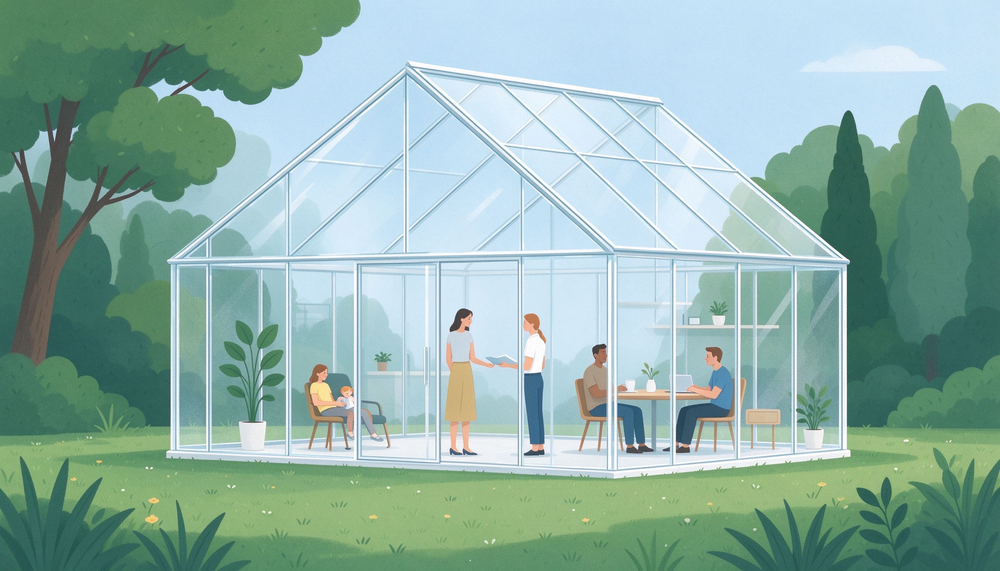
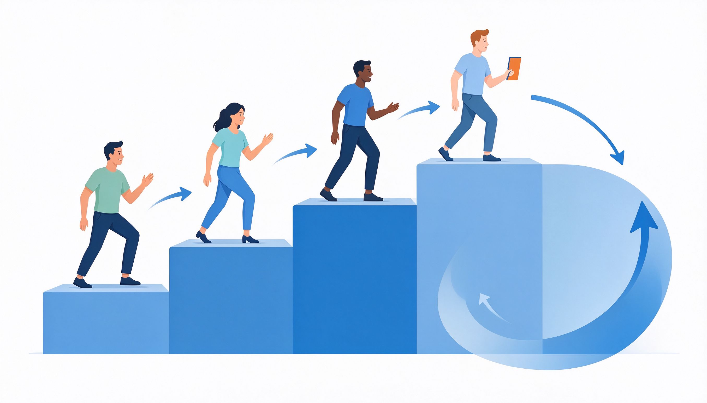
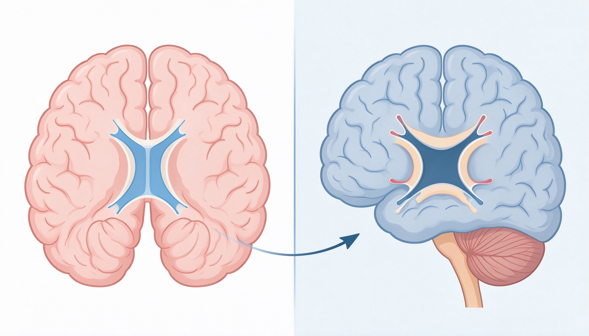
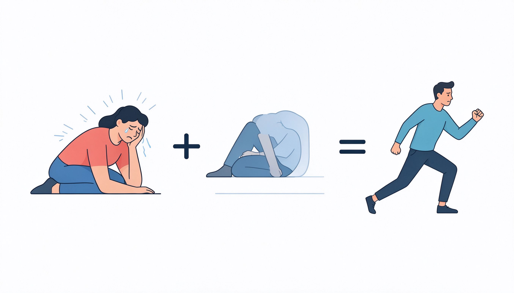

瑞·达利欧 · 桥水基金创始人 · 原则与进化
极度求真极度透明五步流程可信度加权进化人最幸福的时刻不是躺着刷手机，而是全神贯注做一件有挑战的事。心流，是主动掌控人生的方法。
达利欧 1982 年公开预言美国经济崩溃，结果市场大涨，他几乎破产。这次惨败让他悟到：要把每次失败变成原则。桥水后来管理上千亿美元，靠的不是预测，而是"拥抱现实、处理现实"的系统。
达利欧把桥水变成"透明公司"：所有会议录音，所有决策公开，所有错误在大会上讨论。因为谎言和掩盖会让错误腐烂；而真相，无论多难堪，都能让系统自我修复。

①设定清晰目标 → ②识别阻碍问题 → ③诊断问题根因 → ④设计解决方案 → ⑤执行方案。然后循环。绝大多数人卡在"识别问题"——不敢面对，或怪罪别人。

不是一人一票，也不是领导拍板，而是"可信度加权"：在该领域有可追溯成功记录的人，权重更高。创业公司、投资团队、家庭决策——都用这个方法，让最佳想法胜出。

头脑封闭的人：只捍卫观点，拒绝异议，觉得被挑战=被冒犯。头脑开放的人：主动想知道自己错在哪，把分歧当学习机会。开放不是软弱，是力量的来源。

痛苦是进化的信号：肌肉撕裂后更强，认知被推翻后更清醒。达利欧：如果不在痛苦时反思，痛苦就只是痛苦；反思了，痛苦就是学费。
生活原则：拥抱现实→五步流程→头脑开放→进化。工作原则：极度求真透明→创意择优（最佳想法胜出）→把决策做成算法→打造可信赖团队。两者同一套底层逻辑。
解锁你将获得：第 8-10 课完整内容（算法化决策机器、创意择优、总结复盘）+ 全部 16 个互动游戏 + 全部 12 枚徽章 + 深度精读视频。
本书出自「熙祺智书」投资理财专题。配套阅读：《穷查理宝典》《投资最重要的事》《周期》。